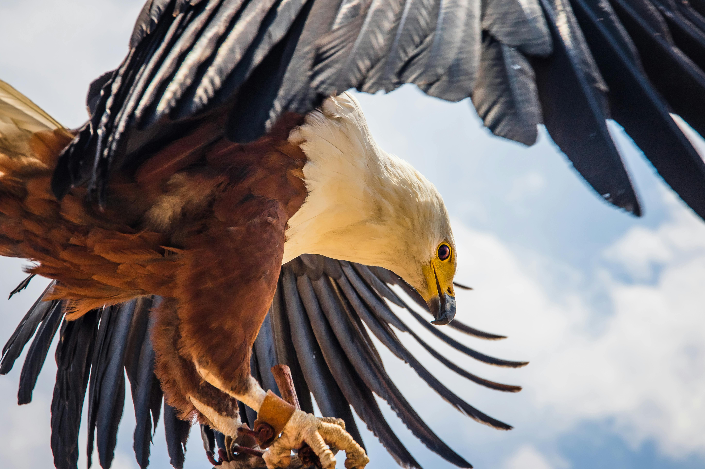
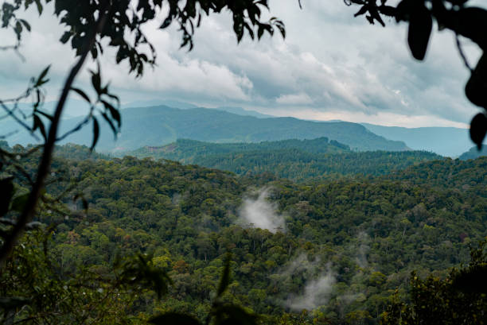

Unveiling Sri Lanka's Wildlife Wonders

Embark on a journey to discover Sri Lanka's wildlife wonders. From lush jungles to pristine coastlines, our island paradise unfolds a tapestry of diverse ecosystems and unique species. Explore the untamed splendor of this enchanting realm, where every moment is a revelation. Welcome to the wild wonders of Sri Lanka, where nature's secrets come to life.
Avian Paradise: Soaring Through Sri Lanka's Skies

Embark on a journey into the heart of Sri Lanka's avian wonderland, where the skies play host to a breathtaking display of colors and melodies. In this sanctuary for bird enthusiasts, lush habitats provide refuge to an array of species, both endemic and migratory. Vibrant plumage and distinctive calls fill the air as you explore the diverse landscapes that draw flocks from around the world.
Iconic Wildlife Species

Asian Elephant
The majestic Asian Elephant is a symbol of Sri Lanka's wildlife. With large herds residing in national parks, these gentle giants are a common sight, particularly in areas like Udawalawe and Minneriya

Lankan Lepoard
Renowned for its elusive nature and striking golden coat with distinctive black rosettes, the Lankan leopard is a top predator in the island's jungles.

Lankan Junglefowl
The vibrant and colorful Lankan Junglefowl, the national bird of Sri Lanka, is an endemic species. Its striking plumage and distinctive crowing make it a symbol of the island's avian diversity.
Diversity
Explore the dense rainforests of Sinharaja, a UNESCO World Heritage Site and a biodiversity hotspot, where vibrant plant life and elusive species thrive in the midst of untouched wilderness. Wander through the dry zone forests of Wilpattu, Yala, and Minneriya, home to iconic elephants, leopards, and a myriad of bird species.
The aquatic realms are no less captivating, as Sri Lanka's coastal areas and surrounding oceans host a diverse marine habitat. Coral reefs teem with colorful fish in Hikkaduwa and Trincomalee, while the southern seas become a migratory route for majestic whales.
- Explore Sri Lanka's 'Diverse Habitats'—from the misty hills of Sinharaja to the arid plains of Wilpattu.
- Immerse yourself in the lush rainforests, home to unique wildlife.
- Dive into the coastal waters, where vibrant marine life thrives.
- Witness the interconnected beauty of Sri Lanka's ecosystems, each a haven for a myriad of species.
